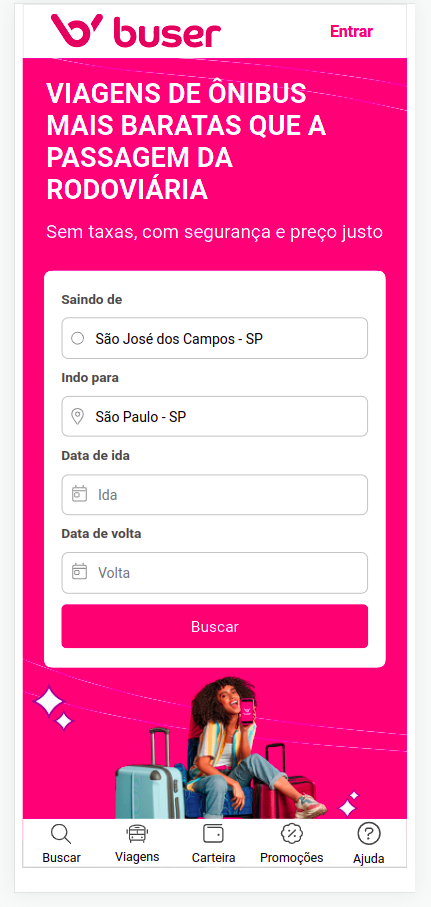

Replicação do buscador Buser
Desafio de replicar o buscador utilizado no site principal da Buser, focado na construção de estrutura mobile apenas.
Veja esse e outros repositórios completos.png)
Desafio Frontmentor
Desafio de replicar a interface de assinatura de um plano musical do app.
Veja esse e outros repositórios completos